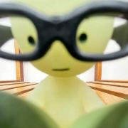

<!DOCTYPE html>
<html lang="zh-CN"></html>
<head>
    <meta charset="UTF-8">
    <meta name="viewport" content="width=device-width, initial-scale=1.0">
    <title>这是一个网页</title>
    <!-- 引用字体 -->
    <link href="https://fonts.googleapis.com/css2?family=Architects+Daughter&family=Patrick+Hand&family=Rock+Salt&display=swap" rel="stylesheet">
    <style>
        *{
            margin:0;
            padding:0;
            box-sizing:border-box;
        }
        body{
            font-family:-apple-system, BlinkMacSystemFont, "Segoe UI", Roboto, "Helvetica Neue", Arial, sans-serif;
            line-height:1.7;
            color:rgb(129, 224, 143);
            background-image:url(pictures/彩绘画风2.PNG);
            background-color:rgba(0, 0, 0, 0.5);
            /* 让背景图和颜色混合 */
            background-blend-mode:multiply;
            background-size:cover;
            background-position:center;
            background-repeat:no-repeat;
            min-height:100vh;

            /* 头像居中 */
            /* display:flex;
            flex-direction:column;
            align-items:center; */

            /* 设置背景毛玻璃效果 */
            /* backdrop-filter:blur(3px); */

        }
        .avatar{
            width:80px;
            height:80px;
            border-radius:50%;
            margin-bottom:0rem;
            border: 4px solid #fff;
            margin-top:100px;
        }
        .profile{
            /* 文字图像居中 */
            text-align:center;
            font-family: 'Comic Sans MS', 'Chalkboard SE', 'Marker Felt', cursive;
        }
        .about-section{
            text-align:center;
            width:100%;
            margin-top:3.5rem;

        }
        .like-link{
            /* 消除下划线 */
            text-decoration:none;
            display:inline-block;
            color:rgb(255, 255, 255);
            font-size:4rem;
            /* 鼠标悬停形状设置 */
            cursor:url("pictures/外星人.cur"),pointer;
            transition:all 1s;
            
        }
        /* 悬停字体变换效果 */
        .like-link:hover{
            color:rgb(234, 130, 70);
            text-shadow:10px 10px 10px rgb(104, 36, 36);
            transform:scale(1.1);
        }
        .like-link .line{
            /* 让每个span独占一行，形成竖排效果 */
            display:block;
            line-height:6rem;
            font-weight:bold;
            
            /* font-family: 'Comic Sans MS', 'Chalkboard SE', 'Marker Felt', cursive;
            text-shadow: 3px 3px 0 rgba(196, 68, 68, 0.2);
            transform: rotate(-1deg) skewX(-2deg);
            letter-spacing: 2px; */

            /* 变换字体及效果 */
            font-family: 'Rock Salt', 'Architects Daughter', 'Patrick Hand', cursive;
            text-shadow: 4px 4px 0 rgb(160, 49, 49);
            transform: rotate(-1.5deg);
            letter-spacing: 1px;

        }
        html {
        touch-action: manipulation;
        }
        /* 每个词不同角度和偏移以及放大缩小 */
        .like-link .line:nth-child(1) { transform: rotate(0deg) translateX(-100px) translateY(50px) scale(1); }  /* WHAT */
        .like-link .line:nth-child(2) { transform: rotate(7deg) translateX(80px) translateY(0px) scale(1); }   /* DO */
        .like-link .line:nth-child(3) { transform: rotate(20deg) translateX(170px) translateY(-150px) scale(2); }  /* I */
        .like-link .line:nth-child(4) { transform: rotate(16deg) translateX(-100px) translateY(-50px) scale(2); }   /* LIKE */
        .like-link .line:nth-child(5) { transform: rotate(-5deg) translateX(168px) translateY(-100px) scale(1.2); }  /* ? */
    </style>

</head>
<body>
    <div class="profile">
        
        <h3>Littley</h3>
        <p><i>Freedom</i></p>
    </div>

    <section class="about-section">
        <a href="" class="like-link" target="_blank">
            <span class="line">WHAT</span>
            <span class="line">DO</span>
            <span class="line">I</span>
            <span class="line">LIKE</span>
            <span class="line">?</span>
        </a>
    </section>
    
</body>
</html>